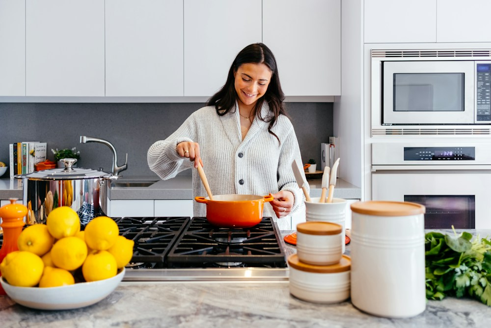

A note from Lea
Home is a feeling.
Sometimes, it's a meal.
Lea’s Table brings the food we love to the people we love. Our kitchen takes inspiration from the welcoming warmth of Filipino home cooking and the bold, beautiful flavors of Japan and China.
We believe a good meal doesn’t need a special occasion. It just needs fresh ingredients, thoughtful cooking, and someone to share it with.

Company profile
Our purpose, served daily.
Lea’s Table is a community-minded Asian fusion food concept based in Mandaue City, Cebu. Founder and CEO Lea Tapdasan is a student at Mandaue City College (MCC) and lives in Mandaue City. We bring together approachable Japanese favorites, familiar Chinese classics, and proudly Filipino comfort food.
Our vision: to make everyday meals a reason to slow down, gather, and feel at home. Our promise: honest flavors, thoughtful hospitality, and food that brings people together.
A little history
One kitchen, a big idea
While studying at Mandaue City College, Lea Tapdasan began sharing her favorite home-cooked recipes with friends and family.
Good food finds its people
Those shared meals inspired a growing menu that brought Asian favorites together with the warmth of Filipino hospitality.
Made for Mandaue
Lea's Table is growing into a neighborhood food venture, serving comfort, connection, and generous plates across Cebu.
The people behind the plates